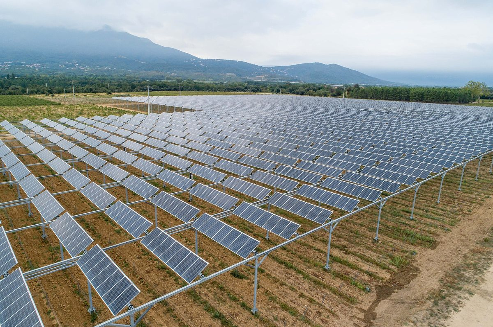

프랑스 오드, "개발업자보다 마을이 먼저"…도 에너지조합·농업회의소 협약, 면·농민 공동 재생에너지 사업 1~3곳 공모

시아덴(Syaden)·오드 농업회의소, 10월 23일 나르본서 협약…공공건물 지붕부터 단계적으로 땅 위로, 초안 뒤 면이 기업 응모 받는 순서로 바꿔, 공모 마감 2027년 1월 18일
프랑스 남부 오드 도의 공공 에너지조합 시아덴(Syaden)과 오드 농업회의소가 10월 23일 나르본에서 열린 '오드 면·지역 박람회'에서 협약을 맺고, 면과 농민이 개발업자보다 먼저 재생에너지 사업을 설계하도록 돕는 공모를 시작했다. 두 기관은 면 의원과 농민이 함께 꾸린 모임 가운데 1~3곳을 골라 창고·면사무소 같은 공공건물 지붕부터 시작해 단계적으로 땅 위 설비까지 사업 초안을 함께 짜고, 초안이 나오면 면이 '관심 표명 요청(AMI)'을 내 기업의 응모를 받도록 한다. 역할은 시아덴이 설비 위치와 주민 수용성, 이웃끼리 전기를 나누는 집단 자가소비 같은 기술 분야를, 농업회의소가 농가 사정을 맡는 식으로 나눴다. 뤼도빅 루(Ludovic Roux) 농업회의소 회장은 개발업자의 제안을 받은 농민 사업 가운데 실제로 성사되는 것은 10건 중 1건 정도이며, 인허가 전에 독점 임대 약속을 받아 땅을 몇 년씩 묶어 두는 일이 잦다고 설명했다. 레지스 방케(Régis Banquet) 시아덴 회장은 "가치는 지역에 남아야 하고, 규칙은 우리가 정해야 한다"고 말했다. 공모는 2027년 1월 18일까지이며, 아직 구상 단계이고 개발업자와 어떤 계약이나 임대 약속도 맺지 않은 지자체·농업인 모임만 신청할 수 있다.
시민에너지 관점
제안 10건 가운데 1건만 성사되는데도 땅은 몇 년씩 묶인다는 말은, 재생에너지 사업의 순서를 외부 개발업자가 쥐고 있을 때 농민과 마을이 치르는 비용이 얼마나 큰지 보여 준다. 면과 농민이 발전 사업을 설계할 능력이 있느냐는 의문이 나올 수 있지만, 프랑스에서는 이미 주민과 면, 지역 기업이 함께 출자한 지역 회사가 마을 지붕에 태양광을 올리는 '상트랄 빌라주아즈(Centrales Villageoises, 마을발전소)'가 여러 지역으로 퍼졌고, 오드도 공공조합과 농업회의소가 기술과 농가 사정을 나눠 맡아 그 빈자리를 채우려 한다. 다만 이번 협약에는 주민 출자 조항이 없어, 계획의 주도권에 이어 발전소 지분까지 주민과 농민에게 열려야 가치가 지역에 남는다는 약속이 완성된다. 국내 농촌 재생에너지도 외부 사업자가 임대 계약서를 먼저 돌리기 전에 지자체와 마을, 농민이 먼저 계획을 짜고 사업자는 거기에 응모하는 순서로 바꿔야 한다.
출처: Écho des Tribunes (Aude Tribune) 2026-10-27 Louise Brahiti 원문 보기
仏オード県「開発業者より先に地域が」…県エネルギー組合と農業会議所が協定、自治体・農家共同の再エネ事業1～3カ所を公募
シアデン（Syaden）とオード県農業会議所、10月23日にナルボンヌで協定…公共建物の屋根から段階的に地上へ、構想づくりの後に自治体が企業の応募を受ける順序に転換、公募締め切りは2027年1月18日
フランス南部オード県の公共エネルギー組合シアデン（Syaden）とオード県農業会議所は10月23日、ナルボンヌで開かれた「オード県自治体・地域見本市」で協定を結び、自治体（コミューン）と農家が開発業者より先に再生可能エネルギー事業を設計できるよう支援する公募を始めた。両機関は自治体議員と農家が共につくるグループの中から1～3カ所を選び、倉庫や役場など公共建物の屋根から始めて段階的に地上設備まで事業の素案を一緒に練り、素案ができれば自治体が「関心表明募集（AMI）」を出して企業の応募を受ける。役割は、シアデンが設備の配置や住民の受容性、近隣で電気を分け合う集団自家消費といった技術面を、農業会議所が農家の事情を担う形で分けた。農業会議所のリュドヴィック・ルー（Ludovic Roux）会長は、開発業者から提案を受けた農家の事業のうち実際に実現するのは10件に1件程度で、許認可の前に独占的な賃貸の約束を取り付けて土地を何年も縛っておくことが多いと説明した。シアデンのレジス・バンケ（Régis Banquet）会長は「価値は地域に残るべきで、ルールは私たちが決めるべきだ」と述べた。公募は2027年1月18日までで、まだ構想段階にあり、開発業者といかなる契約も賃貸の約束も結んでいない自治体・農業者のグループだけが応募できる。
市民エネルギーの視点
提案10件のうち1件しか実現しないのに土地は何年も縛られるという話は、再生可能エネルギー事業の順序を外部の開発業者が握っているとき、農家と地域が払う代償がどれほど大きいかを示している。自治体や農家に発電事業を設計する力があるのかという疑問も出るだろうが、フランスではすでに住民と自治体、地元企業が共同出資した地域会社が村の屋根に太陽光を載せる「サントラル・ヴィラジョワーズ（Centrales Villageoises、村の発電所）」が各地に広がっており、オード県も公共組合と農業会議所が技術と農家の事情を分担してその空白を埋めようとしている。ただ今回の協定には住民出資の条項がなく、計画の主導権に続いて発電所の持ち分まで住民と農家に開かれてこそ、価値を地域に残すという約束が完成する。韓国の農村の再生可能エネルギーも、外部事業者が賃貸契約書を先に配る前に、自治体と集落、農家がまず計画を描き、事業者はそれに応募する順序に変えるべきだ。
出典: Écho des Tribunes (Aude Tribune) 2026-10-27 Louise Brahiti 原文を読む
法国奥德省"村镇先于开发商"…省能源联合会与农业商会签约，公开征集1至3个市镇与农民共同的可再生能源项目
Syaden与奥德省农业商会10月23日在纳博讷签约…从公共建筑屋顶起步逐步扩展到地面，方案成形后由市镇征集企业应标，征集截止2027年1月18日
法国南部奥德省的公共能源联合会Syaden与奥德省农业商会10月23日在纳博讷举行的"奥德市镇与地方博览会"上签署协议，并启动一项公开征集，帮助市镇和农民赶在开发商之前自行设计可再生能源项目。两家机构将从市镇议员与农民共同组成的团体中选出1至3个，从仓库、镇政府等公共建筑屋顶起步，逐步扩展到地面设施，共同拟定项目初步方案；方案成形后，由市镇发布"意向征集（AMI）"，接受企业应标。分工上，Syaden负责设备选址、居民接受度以及邻里分享电力的集体自发自用等技术事项，农业商会负责农户情况。农业商会主席吕多维克·鲁（Ludovic Roux）表示，在接到开发商提议的农民项目中，最终落地的大约只有十分之一，而开发商常在取得许可前就拿到独家租赁承诺，让土地被套牢好几年。Syaden主席雷吉斯·邦凯（Régis Banquet）说："价值必须留在本地，规则应由我们来定。"征集截至2027年1月18日，只接受仍处于构想阶段、尚未与开发商签订任何合同或租赁承诺的地方政府与农业主体联合团体申请。
市民能源视角
提议十个只成一个，土地却被套牢多年，这说明当可再生能源项目的先后顺序掌握在外来开发商手中时，农民和地方付出的代价有多大。有人会质疑市镇和农民是否有能力设计发电项目，但在法国，由居民、市镇和本地企业共同出资成立地方公司、在村庄屋顶安装光伏的"村庄电站（Centrales Villageoises）"早已在多地推广，奥德省也正由公共联合会和农业商会分担技术与农户事务来补上这块短板。不过这次协议没有居民出资条款，只有在规划主导权之后，把电站股份也向居民和农民开放，"价值留在本地"的承诺才算完整。韩国农村的可再生能源也应改变顺序：在外部业者先递出租赁合同之前，由地方政府、村庄和农民先拟定规划，业者再来应标。
来源: Écho des Tribunes (Aude Tribune) 2026-10-27 Louise Brahiti 查看原文
France's Aude puts "villages before developers": energy syndicate and farm chamber sign charter, call for 1 to 3 joint commune-farmer renewable projects
Syaden and the Aude Chamber of Agriculture signed on 23 October in Narbonne; projects start on public roofs and move step by step onto land, and communes will invite company bids only after drafting their own plans; deadline 18 January 2027
Syaden, the public energy syndicate of the Aude department in southern France, and the Aude Chamber of Agriculture signed a charter on 23 October at the Aude communes and territories fair in Narbonne and launched a call for projects to help communes and farmers design renewable energy schemes before developers do. The two bodies will choose one to three groups formed jointly by local councillors and farmers and help them draft a preliminary project, starting on the roofs of barns, town halls and other public buildings and moving step by step to ground-mounted installations; once the draft is ready, the commune will issue a call for expressions of interest (AMI) and companies will bid on it. Syaden will handle the technical side, such as siting, local acceptance and collective self-consumption that lets neighbours share electricity, while the chamber brings its knowledge of farm businesses. Ludovic Roux, president of the chamber, said only about one in ten farmer projects proposed by developers actually goes ahead, and that developers often secure exclusive lease promises before obtaining any permit, tying up land for years. "The value must stay in the territory, and it is up to us to set the rules," said Régis Banquet, president of Syaden. The call runs until 18 January 2027 and is open only to groups of local authorities and farmers whose projects are still at the idea stage and who have signed no contract or lease promise with a developer.
Citizen Energy View
That only one proposal in ten goes ahead while land stays locked up for years shows how much farmers and villages pay when outside developers control the order in which renewable projects are built. Some will ask whether communes and farmers can really design power projects, but in France the Centrales Villageoises (village power plants), local companies jointly funded by residents, communes and local businesses that put solar on village roofs, have already spread to many regions, and the Aude is now filling the same gap by having a public syndicate and the farm chamber share technical and agricultural expertise. The charter, however, contains no provision for residents to invest, and the promise that value will stay local is only complete when, after control of the plan, a stake in the plants is also opened to residents and farmers. Rural renewable energy in Korea should change the order in the same way: before outside companies hand out lease contracts, local governments, villages and farmers should draw up the plan first and let companies bid on it.
Source: Écho des Tribunes (Aude Tribune) 2026-10-27 Louise Brahiti Read the original